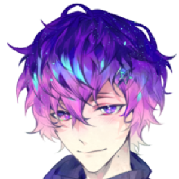
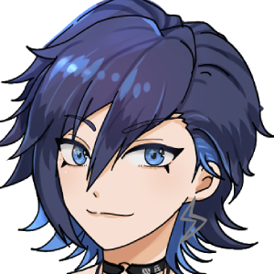

Noctyx prepared a birthday surprise for Uki! Everyone prepared egg dishes for Uki, and wish him a happy birthday. On that day when everyone showed up with their food, Yugo and Alban wanted Uki to pick up which one is his favourite dish. It became a war between Noctyx! Which one will be Uki's favourite and what will happen next...?


Uki Violeta
Our birthday boy!! Psychic from Nijisanji en 5th wave Noctyx. Uki has a soft, gentle and sexy voice. He is calm and soft but also has a very different personality. A star fell in his eye which made him become heterochromia. He has a good relationship with everyone in Noctyx. They always support each other. As an "eggholic", he likes eggs so much even thought about having an egg farm so that he can track the source of eggs.
- 


- 
偷馬
CHEN
ùïÉùïê | Áê≥
Ali
ùïÉùïê | Áê≥
叭啦
狗寶寶寶
Kiwi
Mirum
歐姆蛋
海月
彩虹
Kaoru
呵呵